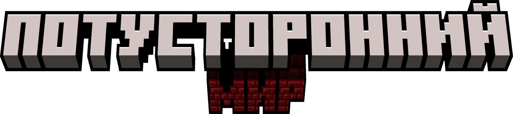
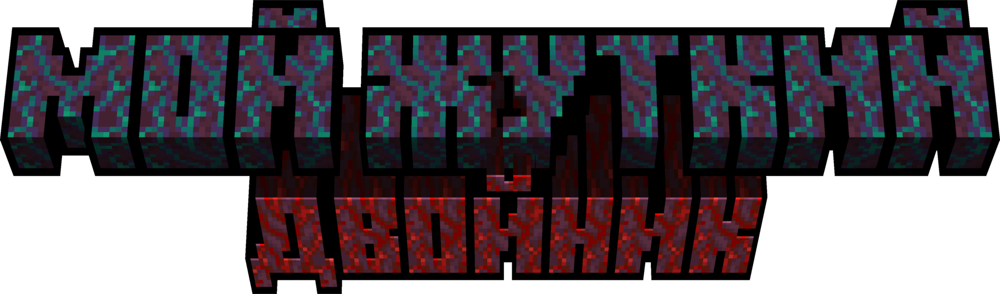

Новости по страшилкам KotikGamerz
Страшилка: "Потусторонний мир"

Опубликовано: KotikGamerz, 11.10.2024 18:40
Страшилка Потусторонний Мир была придумана мной еще в Августе 2024 года и вот как:
В один замечательный день я сидел и думал что же мне снять. Тогда я зашел в YouTube и мне на глаза попалась
замечательная страшилка созданная в Minecraft. Тогда то я и подумал, а что если записать СВОЮ Minecraft
страшилку и выложить ее на свой канал. Именно тогда я и придумал страшилку. После построения плана страшилки
я забросил ее на несколько месяцев а сейчас снимать. Уже сейчас вы можете посмотреть мою первую Minecraft
страшилку на YouTube:
Кликни что-бы посмотреть
Я и моя команда уже работает над этой страшилкой. Вам нужно чуть чуть подождать.
В скором времени 2 и остальные части страшилки будут опубликованы.
Страшилка будущего: "Мой жуткий двойник" (по мотивам WORLD BEGEMOT KOT)

Опубликовано: KotikGamerz 11.10.2024, 19:11
Страшилка Мой жуткий двойник выйдет после небольшого перерыва после завершения "Потусторонний мир".
Предистория: Главный герой KotikGamerz прочитал в интернете ритуал по призыву своего двойника. Автор ритуала
просил не проводить ритуал призыва потому что ритуал изгнания ещё не готов. Однако после того как KotikGamerz
наплевав на все призывает двойника то что то идет не так. Двойник оказался жуткой версией KotikGamerz который
запер главного героя в его же доме и хочет его убить. Теперь KotikGamerz заперт в доме с призраком и ему
предстоит оттуда выбраться...
Все страшилки - лишь плод фантазии автора. Любое сходство с реальными людьми или событиями является
случайным и непреднамеренным.
©KotikGamerz Team 2024. All rights reserved.